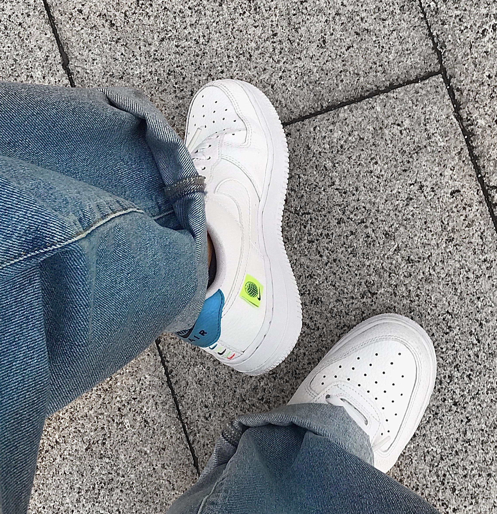

I'm super into sneakers. I love reading about and admiring sneakers.
I've been dancing for over 16 years now. This is a moment captured from my favorite performance ever.
My favorite place: Hong Kong, taken on a disposable camera, a new hobby I picked up.